|
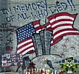 |
 
|
ATTACK ON AMERICA! MEMORIAL SITE SEPTEMBER 11, 2001 THE DAY OF INFAMY |
|
|
Donations, no matter how small, keep all of the patriotic sites by Jeff Head, functioning & offset hosting, bandwidth, domain, & other services & fees. | ||||
| View Attack on America Guestbook |
Compiled by: Jeff Head LAST UPDATE - June 20, 2008 |
Sign Attack on America Guestbook |
Where could 9-11 Lead?
[Click Above] |
NOTICE TO VISITORS: Be forewarned, there are graphic scenes of death, injury and destruction on this, the opening, page of this web site. This is the awful brutality and reality of what was forced upon our nation on September 11, 2001. In order to stamp out this horror, in order to avoid more in the future, we must never forget, we must remain forever vigilant. Gauge your visit accordingly, the other links do not contain the graphic images contained on this first page. As we remain vigilant, as we remain true to our heritage and resolve, may God bless and keep the United States of America. |
Historical-Fiction of 911
[Click Above] |
|
ATTACK ON THE WORLD TRADE CENTER, NEW YORK - 8:45 AM At approximately 8:45 AM on Tuesday, September 11, 2001, a horrendous, dastardly and despicable attack on the United States of America was conducted by extremist Islamic groups, supported by rogue Islamic governments. The attack(s) were conducted against innocent American citizens, against the financial infrastructure of America and against America's military infrastructure. At that hour and minute, hijacked American Airlines Flight Number 11, with ninety-two passengers on board and which had been hijacked by Islamic fundamentalists who commandeered and flew the plane, crashed into one of the towers of the World Trade Center in New York City, New York. On any given day, approximately 50,000 people work in the World Trade Center complex. The crash was captured on video tape, as were subsequent attacks.
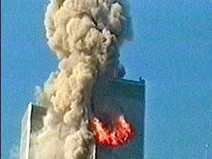 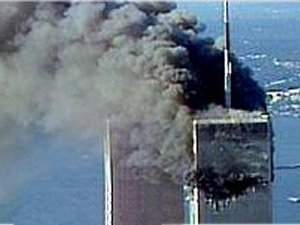 The crash exploded in a tremendous fireball, that gutted that area of the tower about twenty floors below the top. At 8:45 AM, the offices would have been almost completely full as workers were beginning their day. The upper portion of the structure caught on fire as debris rained to the streets below. People in the lower floors, and people in the 2nd tower began to evacuate. At this point, it was still unclear as to whether this was a horrible accident, or an unprincipled attack. The answer would come in a horrific manner eighteen minutes later. As the eyes of the world watched in horror, at 9:03 AM, a second passenger airliner, Untied Airlines Flight Number 175, with sixty-five passengers on board and which also had been commandeered by terrorists, flew in low over the city, took careful and deliberate aim, and slammed into the second World Trade Center Tower.
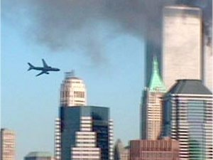 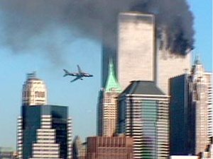 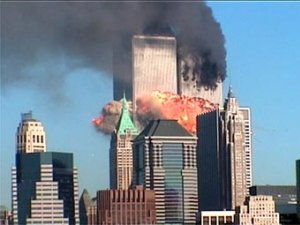 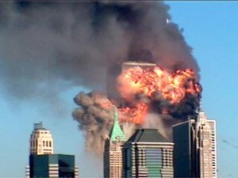 From another angle, this second terrorist attack on the World Trade Center looked like this:
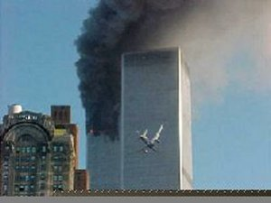 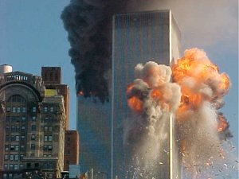 After this attack, the evacuation of the towers became much more difficult as elevators were out of service, the upper floors were in flames trapping many people there, and only those capable of the long trip down the stairs were able to begin evacuating. Nonetheless, hundreds and hundreds of people began to come out of the buildings. At the same time, hundreds of emergency workers arrived and entered the building to assist the rescue effort and to begin fighting the fires.
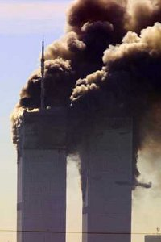 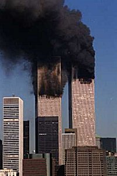 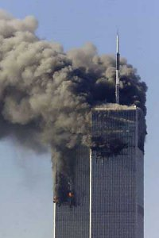 Tragically, people on the upper floors who were forced to windows by the smoke and heat of the fire, began to jump from upper floors, apparently preferring the quick death of a fall as opposed to death by flames. Many bodies came raining down, striking cars, light posts, the ground, and tragically, other people. These images are horrific and terribly graphic, but they are the brutal reality of what these diabolical enemies forced upon our nation.
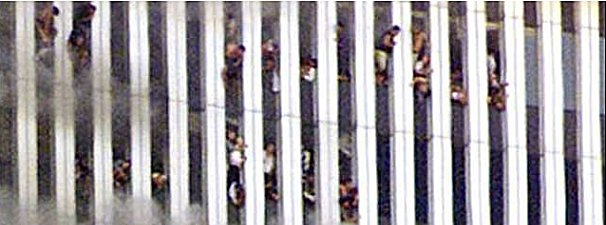 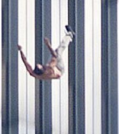 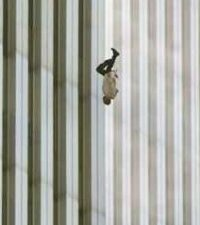 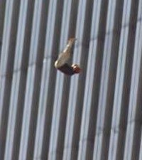 A little over an hour after the first attack, the fires still raged and many thousands of people were still trapped in the buildings. Hundreds of emergency personnel and their vehicles were filling the streets below the buildings. Then, the most horrific and unthinkable thing possible happened. At 10:05 AM, the second tower completely collapsed after its upper floor structure had been weakened by the crash and the heat of the fire.
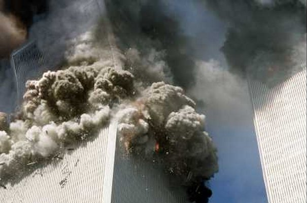 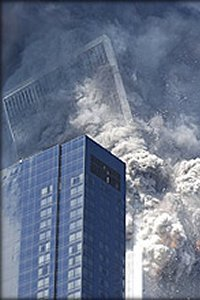 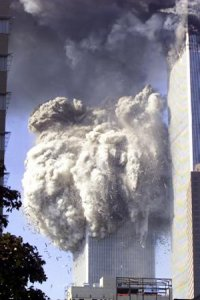 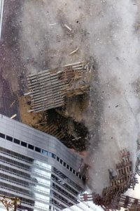 On the street, there was pandemonium. Hundreds of rescue workers and thousands of people in the tower came down with the tower itself. The huge amount of debris literally buried emergency vehicles, rescue workers, survivors and any who could not move out of the way quickly enough. A billowing cloud of smoke, pulverized concrete dust and debris filled the air over Manhattan.
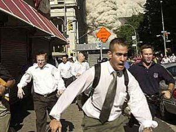 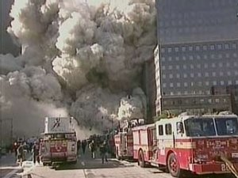 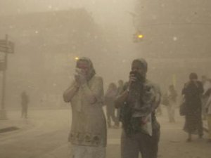 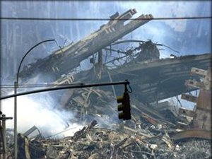 Soon after this horror, hundreds of rescue workers began making their way back to the site of the destruction. Hundreds of fireman were seen walking past news crews as they went to help the victims, and to help their brother firemen and policemen who themselves had become victims. The first tower to be hit still was burning on the upper floors. There as concern that it too might fall. Then, at approximately 10:28 AM, almost thirty minutes after the first tower collapsed and fell to the streets below, the final tower also failed at the point of the airline impact. It too fell to the streets below in another horrendous rain of concrete, debris, girders and bodies ... burying yet more rescue workers, firefighters, volunteers and survivors.
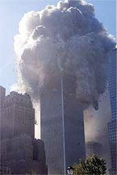 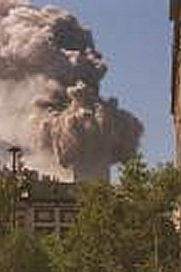 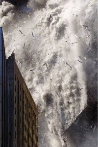 Again, on the street, there was abject terror and chaos as thousands ran to escape. Another billowing cloud of smoke, dust and debris filled Manhattan. Vehicles, buildings and people were crushed.
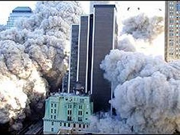 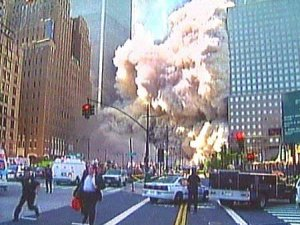 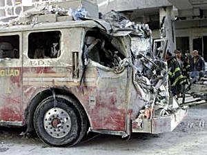 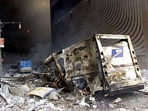 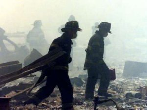 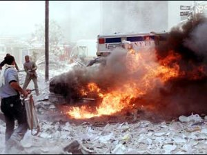 Still, through it all, the rescue workers, volunteers and the victims themselves helped one another escape from the horror. Many watched and were grief stricken as the story played itself out literally before their eyes.
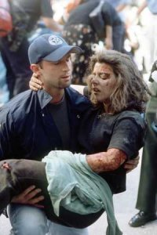 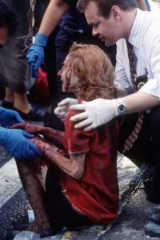 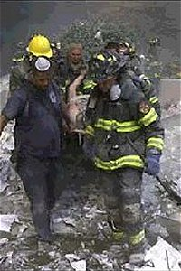 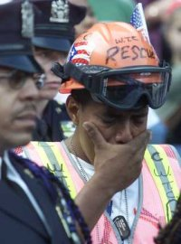 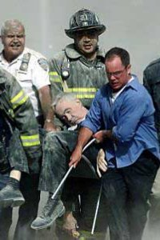 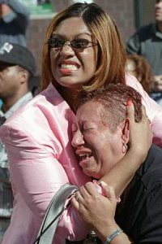 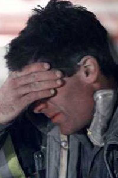 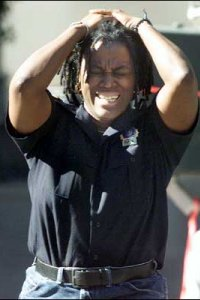 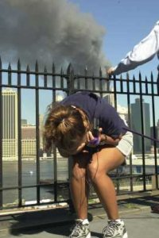 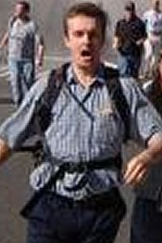 Given the great numbers of people working in the tower, given the two airliners with one hundred and fivty-seven people on board, given the time of day, given the rapid response and great numbers of rescue workers, firefighters, police and volunteers that quickly arrived on the scene before the buildings collapsed ... just over 5300 people were killed or injured on 911.
Jeff Head |

Copyright © 2001-2011 by Jeff Head, All Rights Reserved